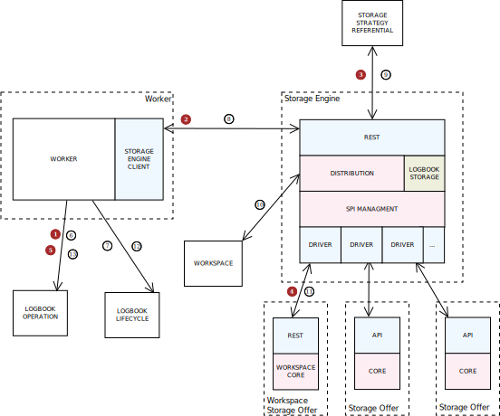

7.10.2.2. Architecture générale¶
7.10.2.2.1. Schéma général¶
7.10.2.2.2. Workflow du stockage des objets¶
Le stockage des objets binaires contenus dans un groupe d’objet technique se fait selon les étapes suivantes :
- Au moment de l’étape de workflow “CheckStorage” (lors de l’étape “Contrôle global entrée (SIP)”) :
- étape 1 : le worker ajoute dans le journal des opérations le début de l’opération de vérification de la disponibilité et capacité des offres associées à la stratégie de stockage (STARTED)
- étape 2 : le worker appelle le moteur de stockage pour faire la vérification de la disponibilité et capacité des offres associées à la stratégie de stokage
- étape 3 : le moteur de stockage appelle le référentiel des stratégies de stockage pour récupérer le détail de la statégie de stockage
- étape 4 : le moteur de stockage appelle les différentes offres de stockage définies par la stratégie de stockage pour vérifier leur disponibilité et capacité à travers leur driver correspondant
- étape 5 : le worker ajoute dans le journal des opérations le résultat de l’opération de vérification de la disponibilité et capacité pour la stratégie (OK/...)
- Au moment de l’étape de workflow “StoreObjects” (lors de l’étape “Rangement des objets”):
- étape 6 : le worker ajoute dans le journal des opérations le début de l’opération de stockage du groupe d’objet technique (STARTED)
- pour chaque objet binaire du groupe d’objet technique :
- étape 7 : le worker met à jour le journal du cycle de vie de l’objet (STARTED)
- étape 8 : le worker appelle le moteur de stockage pour envoyer l’objet dont l’identifiant est donné en suivant la stratégie de stockage donnée
- étape 9 : le moteur de stockage appelle le référentiel des stratégies de stockage pour récupérer les détail de la statégie de stockage
- étape 10 : le moteur de stockage récupére l’objet binaire dans le workspace
- étape 11 : le moteur de stockage envoi l’objet binaire dans les offres de stockage définies par la stratégie de stockage à travers leur driver correspondant
- étape 12 : le worker met à jour le journal du cycle de vie de l’objet (OK/...)
- étape 13 : le worker ajoute dans le journal des opérations la fin de l’opération de stockage du groupe d’objet technique (OK/...)
7.10.2.2.3. Itération 6¶
Limites :
- le référentiel des stratégies de stockage n’est pas encore implémenté, de ce fait la stratégie de stockage est définie de manière statique
- seule l’offre de stockage utilisant une partie du module workspace est disponible
- la vérification de la disponibilité n’est pas encore implémenté.
7.10.2.2.4. Itération 7¶
Implémentation de la disponibilité / capacité.
Limites :
- Une seule offre, ainsi la logique est simplifiée au niveau du distributeur qui ne gère alors pas le multi-offres
- La gestion des erreurs est très basique, il serait certainement intéressant de gérer ces erreurs plus finement
7.10.2.2.5. Itération 13¶
Mise en place du multi-offres.
La stratégie prend maintenant en compte le nombre de copie et les offres qui sont déclarées. Une limite est qu’il faut autant d’offre que de copie.
Dans cette version, le moteur de stockage est séquentiel, il récupère l’objet sur le workspace et l’envoi à la première offre, puis il récupère à nouveau l’objet sur le workspace et l’envoi à l’offre suivante et ainsi de suite.
7.10.2.2.6. Itération 14¶
Implémentation multi-thread
Dans cette version la distribution du moteur de stockage se charge d’envoyer l’objet issu du workspace en parallèle aux différentes offres. L’objet est récupéré sur le workspace et est “copié” n fois, n étant le nombre de copie à faire. Chacune de ces copies est envoyée à une offre au travers de threads.
L’objet n’est pas tout à fait copié. Il passe au travers d’un tee qui crée autant de buffers que de copies. Chacun des buffers est rempli, puis lu en parallèle. Dès que tous les buffers sont vidés, ils sont tous réalimenté jusqu’à ce qu’il n’y ait plus rien à transmettre. Cela signifie que le tee est bloquant. Si un buffer n’est pas vidé les autres attendent potentiellement indéfinement s’il n’y a pas de timeout.
Il n’y a pas de vrai pool de threads dans cette version.
7.10.2.2.7. Itération 16¶
- Revue de l’architecture golbale du stockage. Mise en place du CAS MANAGER et du CAS CONTAINER.
- Refactoring des éléments communs entre les offres et le workspace. Mise en place d’une implémentation workspace spécifique de stockage en mode filesystem